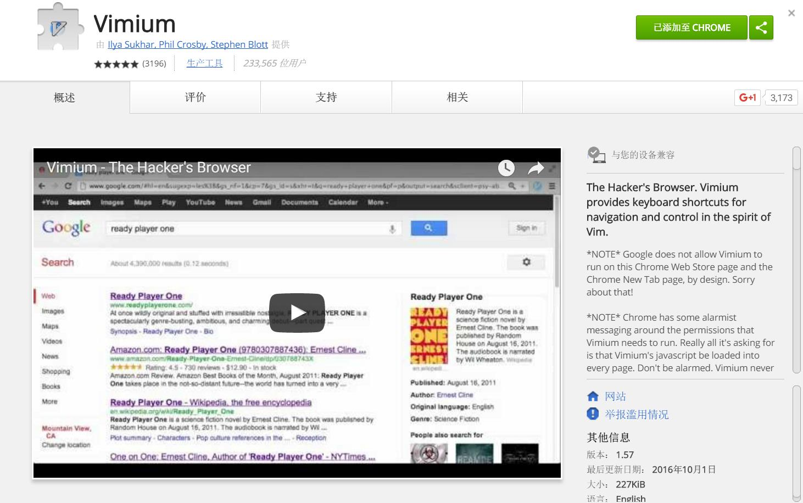
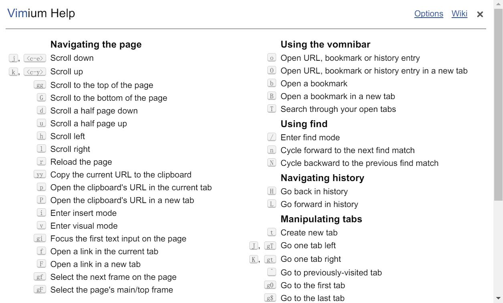
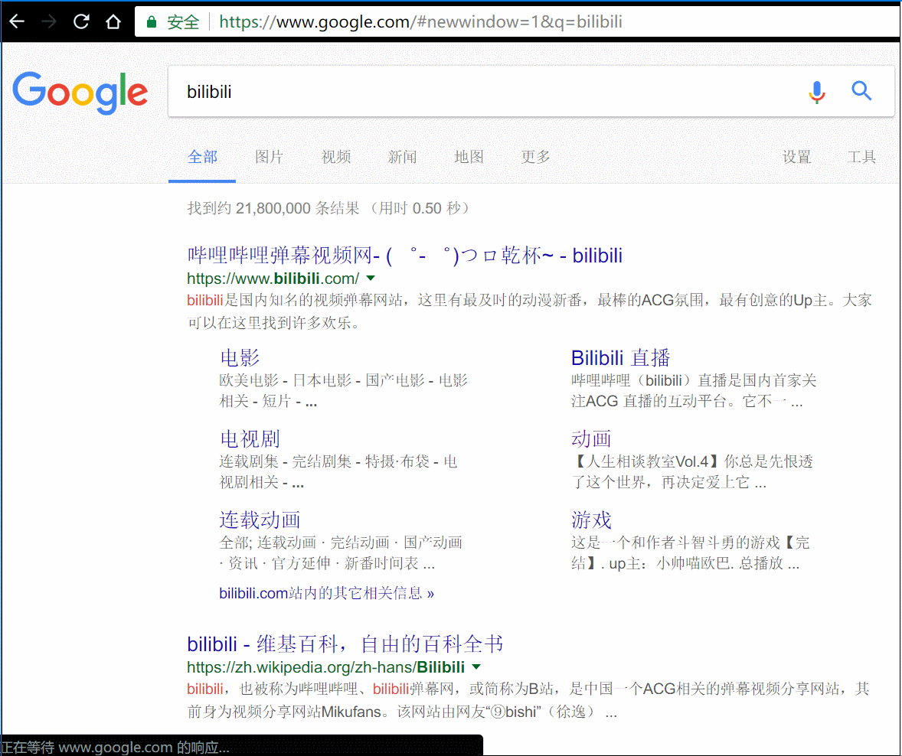
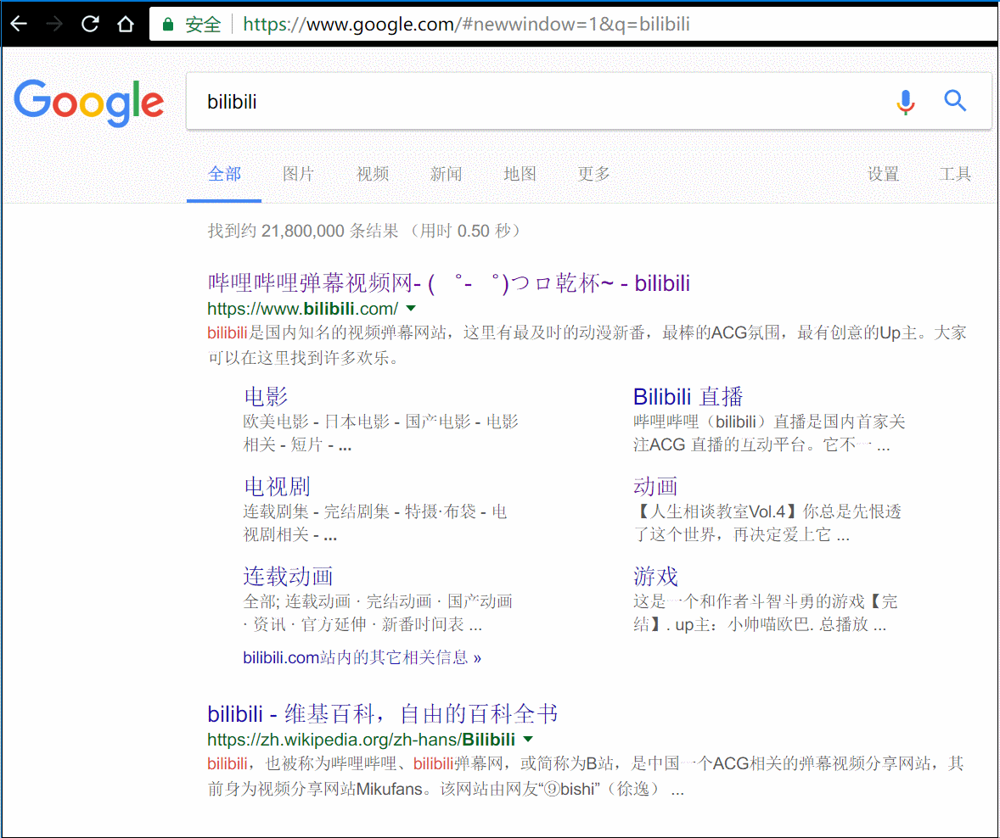
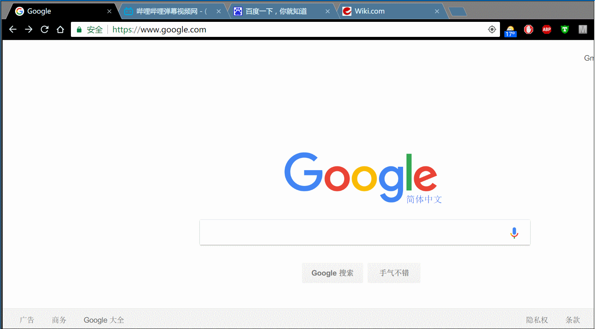
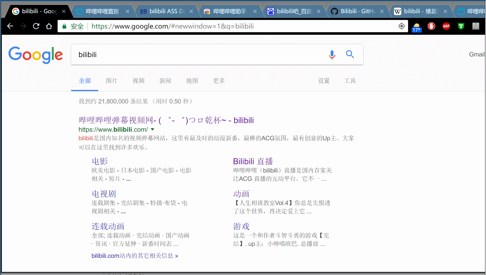
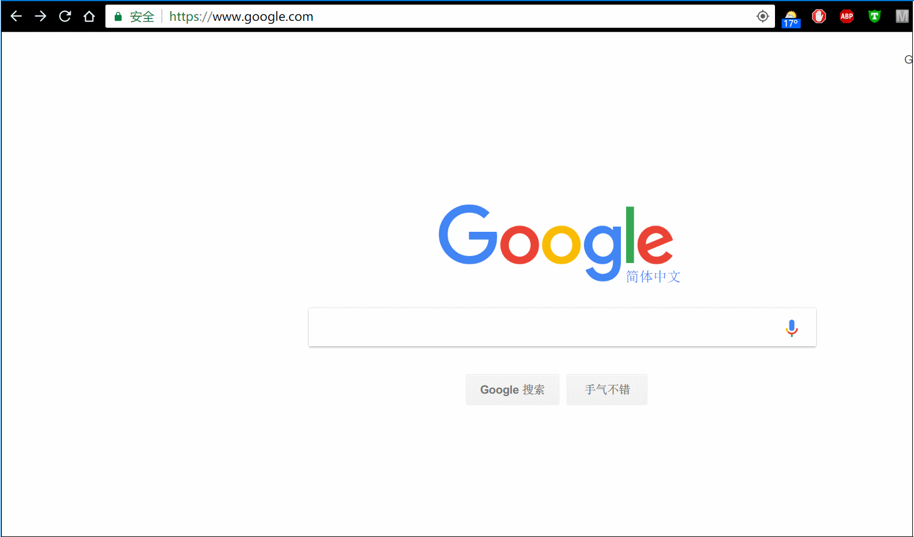
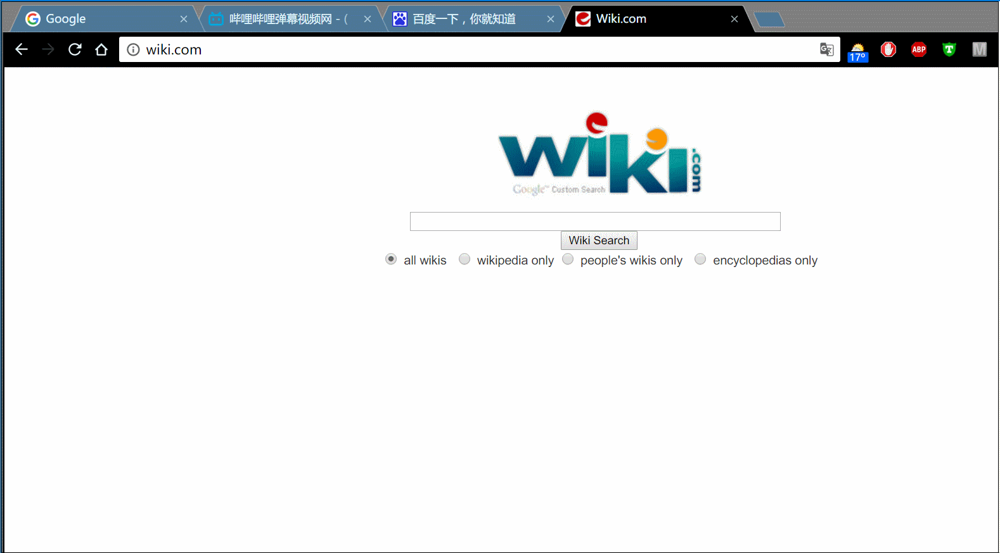

让Chrome的操作速度快得飞起--Vimium插件介绍
更新日期:
Vimium是一款Chrome浏览器的插件，它能让你在浏览网页时抛弃鼠标，完全用键盘操作。看它的名字就知道，它是借鉴了linux下文本编辑的神器Vim的操作方式，使用键盘控制网页的上下翻页、选择和点击。如果你之前有使用Vim的经验，那你肯定能快速上手。如果你是一个装逼少年或者懒癌晚期，那我强烈推荐你使用它解放右手。
安装
安装肯定是在谷歌商店安装了: https://chrome.google.com/webstore/detail/vimium/dbepggeogbaibhgnhhndojpepiihcmeb 什么？你说你打不开，那请先出门右拐搜索一个怎么科（fan）学（qiang）上网。
帮助
当你安装好Vimium之后，按？（即Shift+/）会弹出帮助界面。
滚动页面
j：向下滚动窗口；k：向上滚动窗口；h：向左滚动窗口；l：向右滚动窗口；
gg：滚动到最顶部；G：滚动到最底部；
d：向下滚动半个屏幕（相当于PageDown）；向上移动半个屏幕（PageUp）
j（向下滚动）的效果：
打开链接
按一下小f，然后输入想点的链接的字母，即可在当前页面打开链接，大F则是在新的标签页打开链接，并跳到新的标签页（下图按键盘的顺序是[f] -> [a] -> [k]）：
切换标签页
大J（Shift+j）：切换到左边标签；大K（Shift+k）：切换到右边标签。
有时候会在chrome上打开多个标签页，当标签很多的时候，标签便会被挤的很小，连字都看不完整。这时只需要按一下大写的T，然后就可以输入关键词搜索和快速切换标签了。
搜索历史记录和收藏夹
按o会出现一个搜索框，输入关键词之后会搜索历史记录和收藏夹，小o是在当前页面打开，大O则是在新的标签页打开；b和B则只会搜索收藏夹，不会搜索历史记录：
复制链接
按yy是复制当前页面的地址到粘贴板，小p是在当前页面打开粘贴板上的地址，大P是在新的标签页打开粘贴板的地址。
关闭和恢复页面
小x是关闭当前页面，大X是恢复之前关闭的页面：
其他
r：刷新页面，相当于F5。
gi：将光标定位到输入框，如果有多个可以按Tab键切换。
i：输入模式，chrome的其他插件可能会与Vimium有冲突，此时可以用i键来禁用Vimium。